The sites are new and they’re leaking
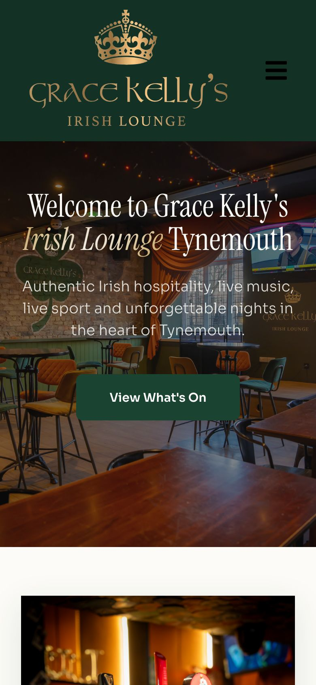
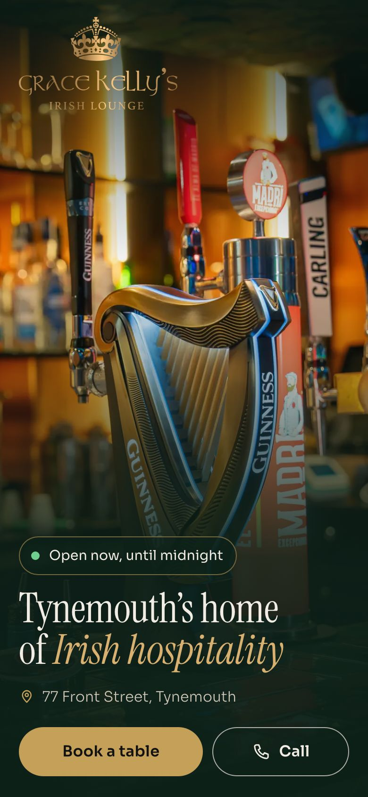
They look the part.
The gaps show to a stranger with a phone and never from behind the bar.
What he sees is marked below, with what I’d do about each one. I do all of it.
What I found
I went through your places at phone width, the way a stranger with a phone meets them. Eight things came up.
Tap Book a Table at the Cove and the booking page opens on “You are making a À La Carte booking enquiry for undefined people at on undefined”, above a red box saying three things are missing before anyone’s typed a thing. 3Sixty’s does the same.
The Cove’s Reservations page has an enquiry box that shows a broken page icon, and nothing loads in it.
The Cove’s home page has no opening hours on it, and its View Drinks Menu button opens a “Page not found” page, with a template placeholder still sitting in the web address. On 3 November the Reservations page still had a Book button for the Halloween event on Tuesday 27 October.
Grace Kelly’s Tynemouth asks you to “take a look around Seaham’s favourite gathering place”, and its one booking link goes to Seaham and is hidden from view. The page has no phone number, and no price in words, only in a picture, and its View Drinks Menu button does nothing when tapped.
Grace Kelly’s Tynemouth has four different sets of opening hours across Google, its site, Instagram and Fanzo, and none of its newest 30 Google reviews has a reply. In the newest 20 at the Cove, the 1 star, the 2 star and two of the three 3 stars have no reply, and 3Sixty’s four 3 stars have none.
3Sixty’s terms page prints “{{NEEDS_INPUT: cancellation and amendment policy}}” for anyone to read, and the Menu link on its Google listing lands on “Page not found”.
Davanti Classico’s new site is built the same way as the Cove’s, and on both the picture a shared link carries is left blank.
Google has Hidden Tiger and Buddha Lounge, both at 76 Front Street, as permanently closed. Hidden Tiger’s first search result is a “Website Expired” page with a Facebook result saying “Open Now” below it, and Google’s own AI answer still tells people to book Buddha Lounge through its Instagram.
Over 3,000 Google reviews between the Cove and 3Sixty, and the booking page calls them undefined people.
I can’t see from outside how many give up at any of these, and I won’t guess. I can show you what one of them is worth.
Where the money is
Take one bottomless table of two, lost once a week, four weeks a month, at each venue’s own price:
the Cove £39.95 a head,
Grace Kelly’s £35,
3Sixty £54.95.
Over four weeks that’s £320 at the Cove, £280 at Grace Kelly’s and £440 at 3Sixty.
About £1,040 a month.
Arithmetic, not a measurement. It says what one lost bottomless table a week is worth, not how many are lost.
The Cove’s Festive Fayre is £34.95 a head, runs 23 November to 24 December and has to be booked ahead, with a £5 a head deposit, through DesignMyNight, the same booking system whose Book a Table link opens on undefined people.
3Sixty’s festive set menu starts at £42.95 a head with a £20 deposit, and 3Sixty isn’t on the first page of Google for christmas party newcastle.
What I’d do about each one
Undefined people.
The Book buttons open on a clean booking form, with no red box.
A broken box.
Connected to a real form, or taken off the page.
No hours, a dead drinks menu, Halloween in November.
Hours on the home page, a drinks menu that opens, and an event comes off the day after it’s been.
Seaham on a Tynemouth page.
Tynemouth’s own words, a phone number, a drinks menu, and buttons that go somewhere.
Four sets of hours and reviews with no reply.
One true set of hours, the same on Google, the site, Instagram and Fanzo. Every review answered, the bad ones first. A booking link on each Google listing, the way 3Sixty already has one.
Template text and a dead link.
The terms get real wording, which you read before it goes up. Google’s Menu link goes to a page that’s there, and the seventeen 3Sixty pages that share one title get one each.
Blank link pictures.
A picture on every shared link.
Closed venues still open online.
If they’re yours and they’re closed, the expired page and the Open Now come down, and every listing says the same thing.
After that, Google gets minded for all of them: hours, events, photos and every review answered.
Every login stays yours. I do all of it, start to finish.
Only a few things are yours to give, because only you know them: which hours are true, the bottomless days, the number to ring, and what the terms should say. You give me those once and I take it from there.
Grace Kelly’s, done over
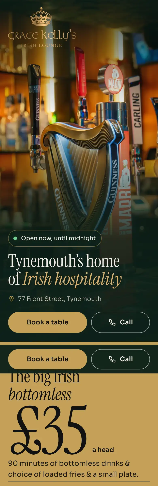
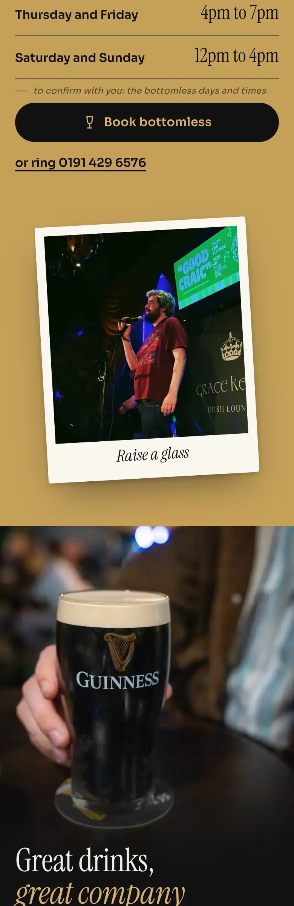
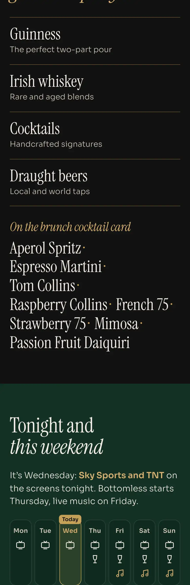
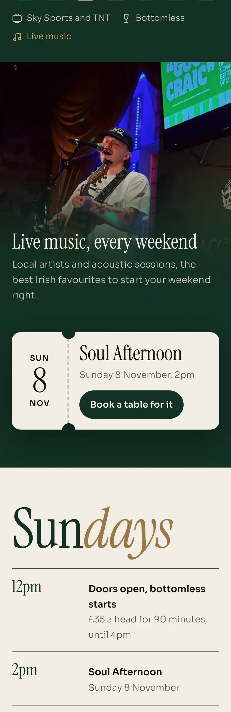
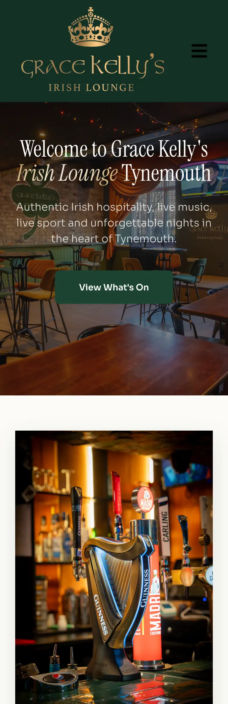
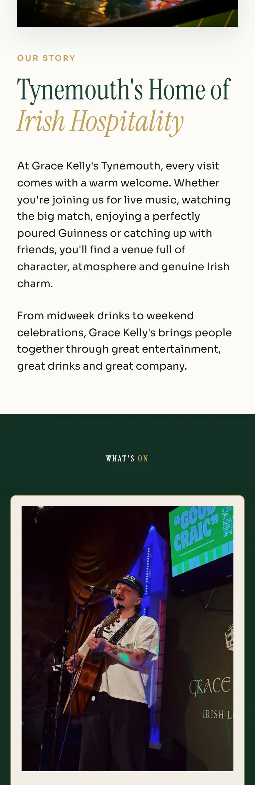
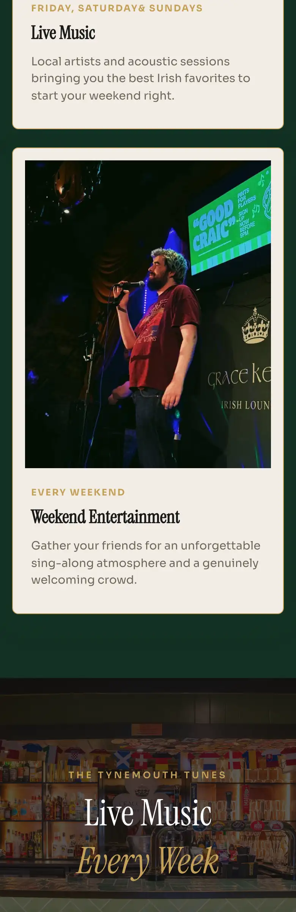
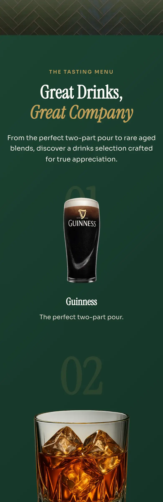
I built Grace Kelly’s Tynemouth the way I’d do it. It’s live and built for a phone: gracekellys.paulmichaellove.com
Everything on it traces to your own pages, your Instagram and Google. Three things stay marked until you’ve told me once which is true: the hours, the bottomless days and the phone number.
The demo is live at its own address and touches nothing of yours: not your site, not your logins, not your Google listing.
What’s changed and why
In the order a customer meets it on a phone.
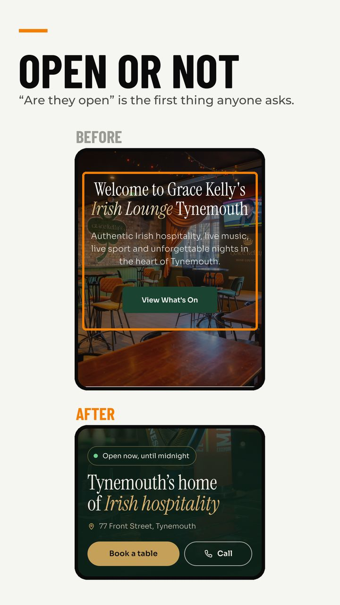
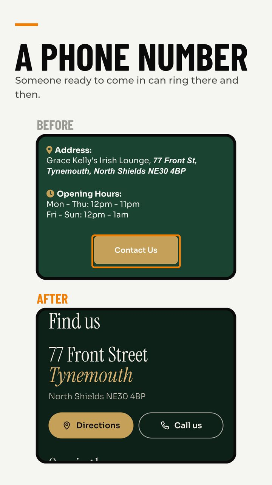
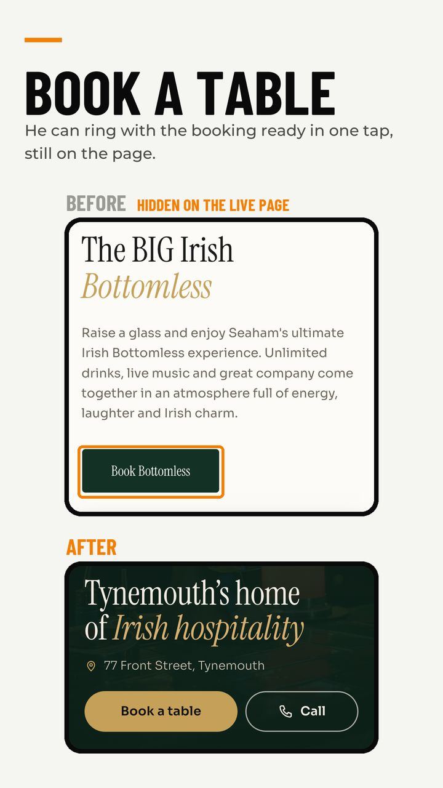
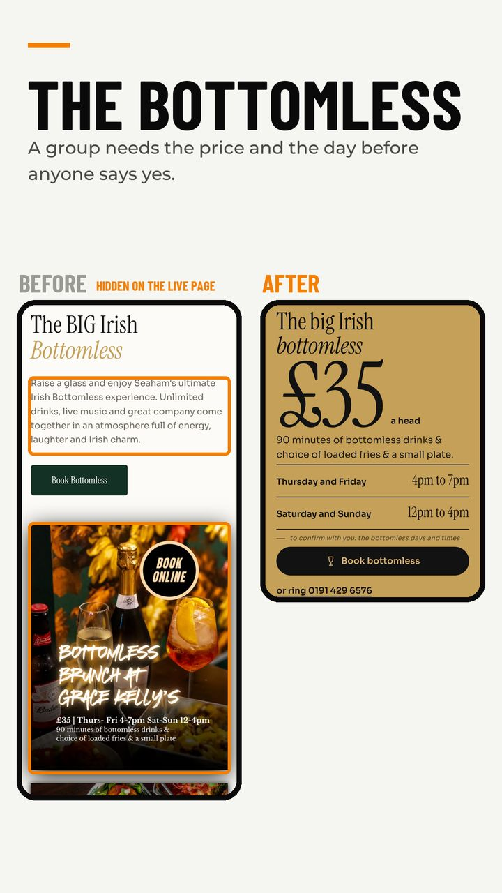
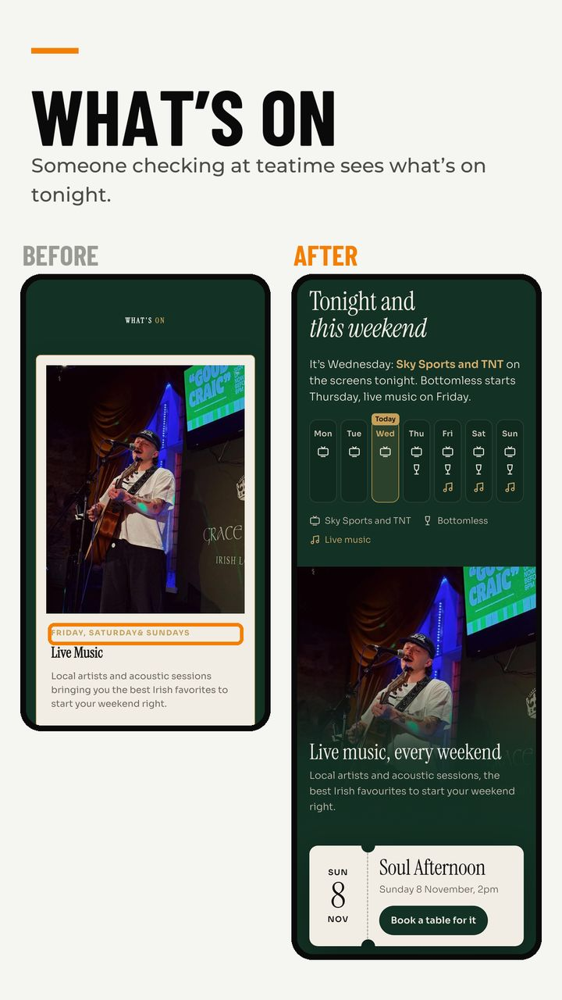
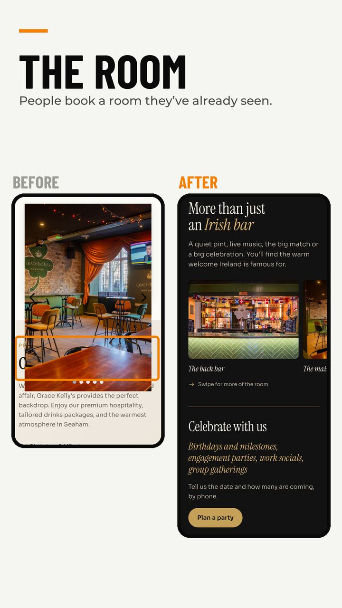
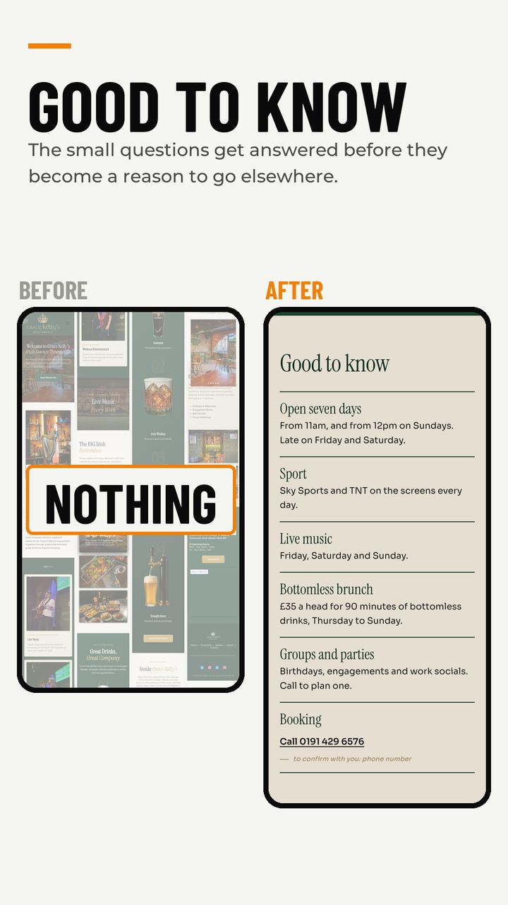
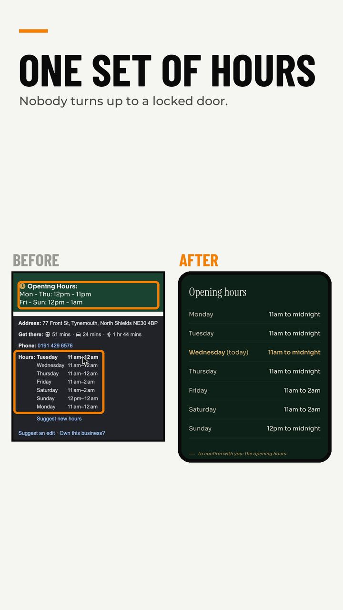
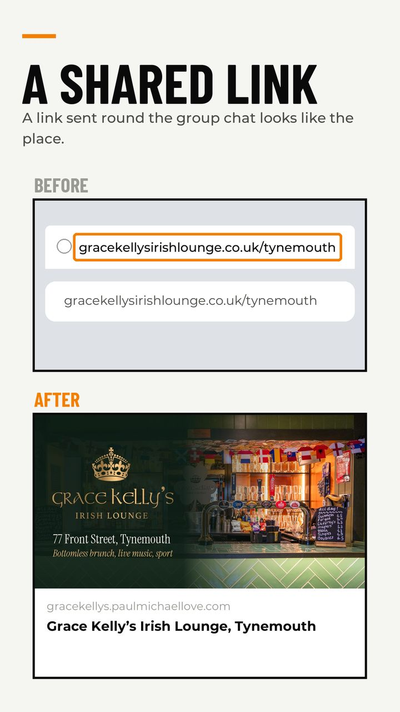
The one before this
Percy Park rugby club got the same audit: a web address that opens on a picture, two live websites with the same article typed into both, and a hire page with no price and no form.
Here’s another example of what I’m pushing out.
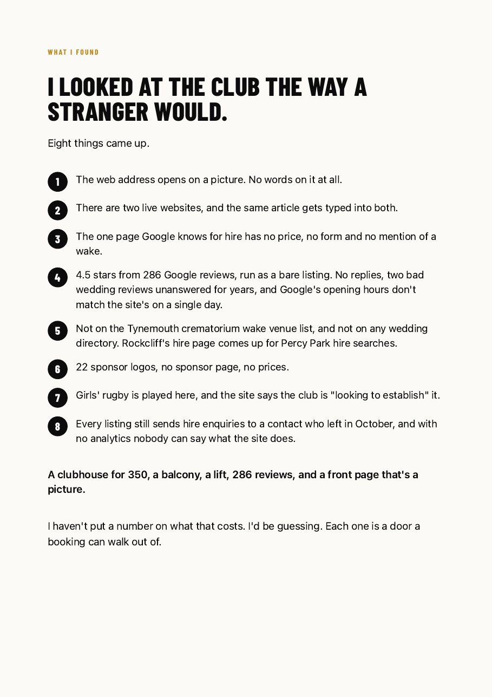
Their front page was one flat picture, with no text a phone or Google can read. This is it now.
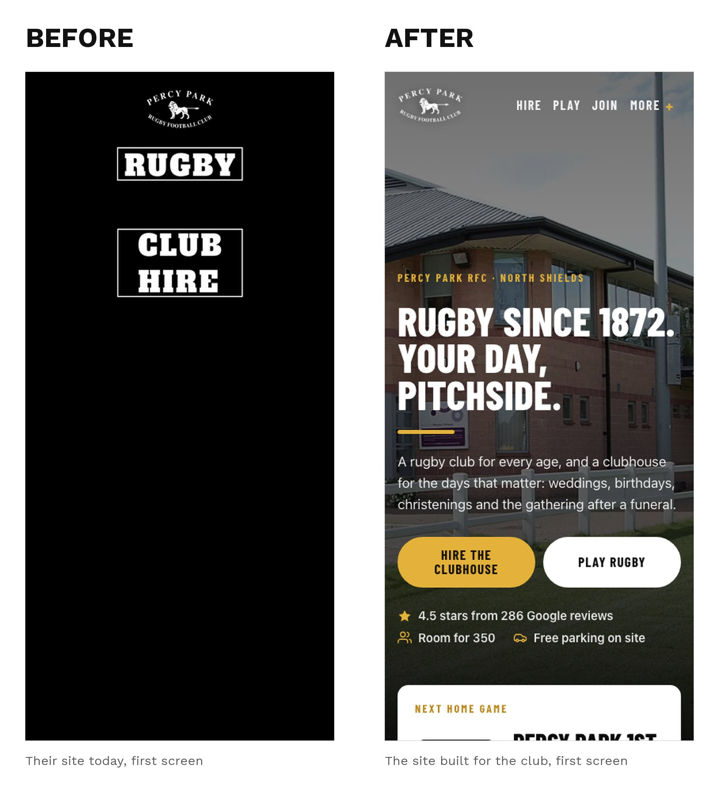
What this costs from an agency
I priced the same work if you hired an agency. These are published UK prices, read this month, and I can show you every source.
Worked out from their listed prices, minding Google and answering the reviews for three venues comes to about £250 to £800 a month. A year of that is about £3,000 to £9,600.
One London agency publishes £500 to £2,000 a month to run Google for a whole group, depending on its size.
The cheap end is a templated site with Google set up for about £49 a month plus a £99 set-up, or a self-serve site tool at £19 to £69 a month. Fair prices for what they are. Neither answers a review in your voice, keeps one true set of hours across Google, your site and the rest, clears the backlog, or fixes what’s already broken on the sites you have.
What it costs from me
For each site, the questions a customer asks get answered where he asks them, and stay answered.
£697 a site to do it over, paid when it’s live.
Then £97 a site a month.
On the same sums as before, one lost bottomless table a week at the Cove and one at Grace Kelly’s come to £600 a month together, and all three minded is £291.
The Cove’s do over is nine bottomless tables of two.
The do over, for each site:
- the page built the way the Grace Kelly’s one is built
- the page hosted and kept up by me; your web address stays yours, and if you stop the page files are yours
- one true set of facts (hours, phone, menu, events, dogs, parking, access, deposits), pushed out to Google
- the backlog of reviews answered in your voice
- a picture on every shared link
- the closed names put to bed
The £97 a month is Google minded: every new review answered in your voice, the hours and events kept true everywhere, closed names kept closed, and a note each month showing what I changed.
The do over is different work from the build you’ve got: a page built from what people ask, the facts on Google and the backlog of reviews answered.
Nothing to pay until it’s live, and you can stop any month and keep every login, every page and every reply.
I’m building this into something, and the first places in get it at these launch prices.
I’m auditing a lot of places, so I expect those to go quickly.
The ask
If it’s in hand already, then no harm no foul. Was worth taking a look and you can use the findings anyway you wish.
Say the word and I take it from there. You send the logins once and I do the rest. Grace Kelly’s is live three days after the logins land, and nothing’s due till the day it is.
This audit uses public pages, listings and socials only. Bookings and payments stay in your systems.
Nothing gets touched on any site, login or Google listing until you say so.